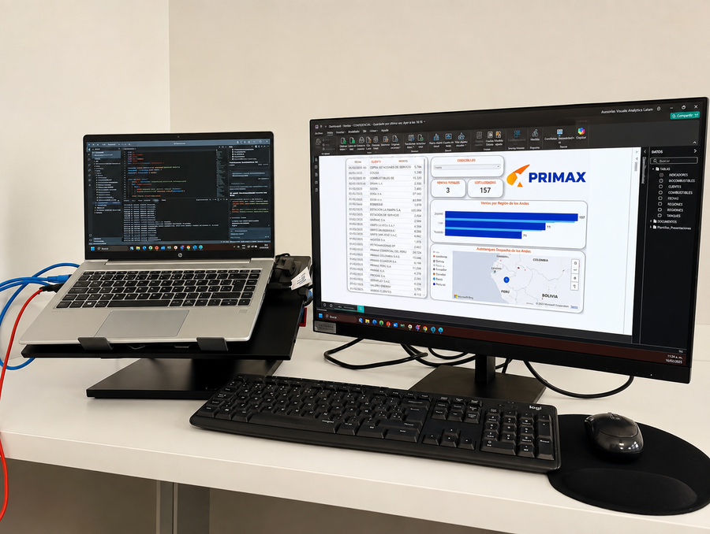

01 / POWER BIINTELIGENCIA COMERCIAL · PRIMAX ECUADOR
Dashboard para visibilizar KPI comerciales
Diseño de un dashboard interactivo en Power BI para monitorear desempeño de asesores, distribución regional y segmentación de clientes.
01Información comercial más visible para el seguimiento operativo.
Proyecto de impacto interno · PRIMAX Ecuador